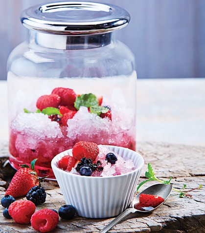

Raspado de frutos rojos

Ingredientes
!--Lista desordenada con los ingredientes a utilizar en el plato-->
- 1 taza de hielo raspado
- 1/3 de taza de frambuesas
- 1/3 de taza de zarzamoras
- 1/3 de taza de fresas
- 1/3 de taza de moras azules
- 2 cucharadas de azucar
Preparacion
- Mezcla los frutos rojos, licua la mitad de ellos con el azucar y cuela la preparacion
- Sirve el hielo en tazones pequeños, agrega los frutos rojos y baña con la salsa dulce